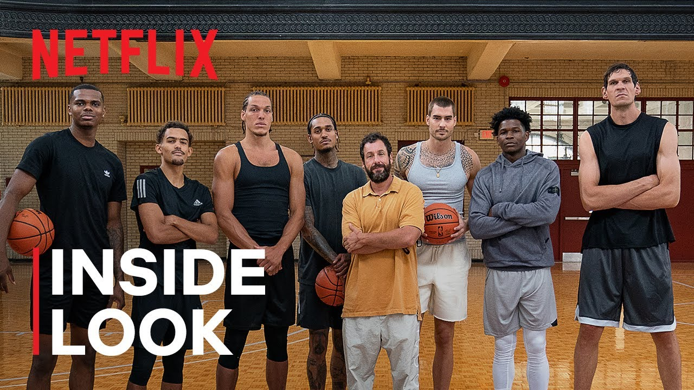

INSERT INTO FILMS (ID_EVENT,ID_GENRE, NOM_EVENT, DESCRIPTION_EVENT, DATE_CREATION, DATE_MODIFICATION, IMAGE_EVENT, NOTE, TRAILER)
VALUES
(1,1, 'Dungeons & Dragons', 'un film américano-canado-britannico-islando-australien réalisé par Jonathan Goldstein et John Francis Daley, sorti en 2023. Il s\'agit d\'une adaptation du jeu de rôle sur table du même nom, créé par Gary Gygax et Dave Arneson, et d\'un reboot de la franchise cinématographique inspirée du jeu, après des films sans succès et à l\'accueil plus que mitigé', '2023', '2023-10-10 12:34:56', './asset/Films/FILM/1.jpg', '9/10', './asset/Films/FILM/1.mp4'),
(2,2, 'Luther : Soleil déchu', 'Luther: The Fallen Sun est un film américano-britannique réalisé par Jamie Payne et sorti en 2023. Il s\'agit d\'un long métrage faisant suite à la série télévisée britannique Luther diffusée dès 2023.', '2023', '2023-01-01 09:00:00', './asset/Films/FILM/2.jpg', '8/10', './asset/Films/FILM/2.mp4'),
(3,3, 'La Chronique des Bridgerton', 'Netflix dont la sortie est prévue le 4 mai 2023. Série dérivée de La Chronique des Bridgerton, elle est un préquel se concentrant sur la jeunesse et l\'arrivée au pouvoir de la reine Charlotte.', '2023', '2023-02-02 15:00:00', './asset/Films/FILM/3.jpg', '9/10', './asset/Films/FILM/3.mp4'),
(4,4, 'Super Mario Bros', 'The Super Mario Bros. Movie est un film d\'animation américano-japonais coréalisé par Aaron Horvath et Michael Jelenic (en), sorti en 2023.', '2023', '2023-10-10 12:34:56', './asset/Films/FILM/4.jpg', '9/10', './asset/Films/FILM/4.mp4'),
(5,5, 'Sonic the Hedgehog', 'L\'histoire du hérisson bleu le plus rapide du monde qui arrive sur Terre, sa nouvelle maison. Sonic et son nouveau meilleur ami Tom font équipe pour sauver la planète du diabolique Dr. Robotnik, bien déterminé à régner sur le monde entier.', '2020', '2020-01-01 09:00:00', './asset/Films/FILM/5.jpg', '8/10', './asset/Films/FILM/5.mp4'),
(6,6, 'Black Panther: Wakanda Forever', 'un film de super-héros américain coécrit et réalisé par Ryan Coogler, sorti en 2022. Il s\'agit du trentième film de l\'univers cinématographique Marvel et du septième et dernier de la phase IV.', '2022', '2022-02-02 15:00:00', './asset/Films/FILM/6.jpeg', '9/10', './asset/Films/FILM/6.mp4'),
(7,7, 'Interstellar', 'Interstellar, ou Interstellaire au Québec et au Nouveau-Brunswick, est un film de science-fiction britannico-américain produit, écrit et réalisé par Christopher Nolan, sorti en 2014. Il met en scène Matthew McConaughey, Anne Hathaway, Jessica Chastain, Michael Caine, Casey Affleck et Matt Damon.', '2016', '2016-10-10 12:34:56', './asset/Films/FILM/7.jpg', '9/10', './asset/Films/FILM/7.mp4'),
(8,8, 'Un divan à Tunis', 'Après avoir passé une partie de sa vie en France, Selma, jeune psychanalyste, revient dans son pays d\'origine, la Tunisie, et ouvre son cabinet à Ezzahra en banlieue de Tunis. Au lendemain de la révolution, les Tunisiens s\'interrogent sur l\'avenir politique et économique de leur pays, en pleine reconstruction après une longue période de dictature. Alors que Selma commence à trouver ses marques, elle se heurte à l\'administration bancale du pays en apprenant qu\'il lui manque une autorisation indispensable pour exercer son métier', '2019', '2019-01-01 09:00:00', './asset/Films/FILM/8.jpg', '8/10', './asset/Films/FILM/8.mp4'),
(9,9, 'Spider-Man: No Way Home', 'Après les événements liés à l\'affrontement avec Mystério, l\'identité secrète de Spider-Man a été révélée au monde entier. Il est poursuivi par le gouvernement américain, qui l\'accuse du meurtre de Mystério, et est traqué par les médias.', '2021', '2021-02-02 15:00:00', './asset/Films/FILM/9.jpeg', '9/10', './asset/Films/FILM/9.mp4'),
(10,10, 'Shazam ! Fury of the Gods', 'Shazam ! Fury of the Gods is a 2023 American superhero film based on the DC Comics character Shazam. Produced by New Line Cinema, DC Studios, and the Safran Company, and distributed by Warner Bros.', '2023', '2023-10-10 12:34:56', './asset/Films/FILM/10.jpg.webp', '9/10', './asset/Films/FILM/10.mp4'),
(11,11, 'John Wick : Chapitre 4 , John Wick continue sa lutte contre l’organisation criminelle connue sous le nom de la Grande Table, en affrontant un puissant ennemi, le Marquis de Gramont. Celui-ci a tissé de nombreuses alliances à travers le monde et il a transformé de vieux amis de John en ennemis.', '2023', '2023-01-01 09:00:00', './asset/Films/FILM/11.webp', '8/10', './asset/Films/FILM/11.mp4'),
(12,12, 'Intouchables', 'Intouchables est une comédie dramatique française réalisée par Olivier Nakache et Éric Toledano, sortie en 2011. L\'histoire est inspirée de la vie de Philippe Pozzo di Borgo (auteur du livre Le Second Souffle en 2001), tétraplégique depuis 1993, et de sa relation avec Abdel Yasmin Sellou, son aide à domicile, dont les rôles sont tenus respectivement par les acteurs François Cluzet et Omar Sy.', '2011', '2011-02-02 15:00:00', './asset/Films/FILM/12.jpg', '9/10', './asset/Films/FILM/12.mp4'),
(13,13, 'The Sandman', 'The Sandman est une série télévisée fantasy anglo-américaine créée et coproduite par Allan Heinberg, basée sur la série de romans graphiques du même nom de Neil Gaiman, publiée entre 1989 et 1996 par DC Comics.', '2022', '2022-10-10 12:34:56', './asset/Films/SERIE/1.png', '9/10', './asset/Films/SERIE/1.mp4'),
(14,14, 'The Boys', 'The Boys est une série télévisée américaine de super-héros développée par Eric Kripke et basée sur la bande dessinée du même nom de Garth Ennis et Darick Robertson. Trois saisons sont disponibles et une quatrième est en cours de préparation', '2019', '2019-01-01 09:00:00', './asset/Films/SERIE/2.avif', '8/10', './asset/Films/SERIE/2.mp4'),
(15,15, 'L\'Attaque des Titans', 'L\'Attaque des Titans Shingeki no Kyojin, litt. Le Titan assaillant, souvent abrégé SnK, aussi connu sous le titre Attack on Titan, est un manga écrit et dessiné par Hajime Isayama. La version française est publiée en intégralité par Pika Édition dans la collection seinen entre juin 2013 et octobre 2021', '2022', '2022-02-02 15:00:00', './asset/Films/SERIE/3.jpg', '9/10', './asset/Films/SERIE/3.mp4'),
(16,16, 'La casa de papel', 'La casa de papel ou La Maison de papier au Québec, est une série télévisée espagnole créée par Álex Pina et diffusée entre le 2 mai 2017 et le 23 novembre 2017 sur la chaîne Antena 3 en Espagne.', '2021', '2021-10-10 12:34:56', './asset/Films/SERIE/4.jpg', '9/10', './asset/Films/SERIE/4.mp4'),
(17,17, 'Manifest', 'Manifest ou Turbulences est un feuilleton télévisé américain créé par Jeff Rake dont 42 épisodes de 43 minutes ont été diffusés entre le 24 septembre 20181 et le 10 juin 2021 sur le réseau NBC et en simultané sur Citytv au Canada. La quatrième et dernière saison est diffusée exclusivement sur Netflix.', '2019', '2019-01-01 09:00:00', './asset/Films/SERIE/5.jpg', '8/10', './asset/Films/SERIE/5.mp4'),
(18,18, 'WandaVision', 'Trois semaines après la fin des évènements liés à Thanos, Wanda Maximoff est bouleversée par la mort de son compagnon. Elle se rend alors dans la petite ville de Westview dans le New Jersey, où Vision et elle avaient l\'intention de s\'installer, et y crée un univers fictif dans lequel elle contrôle l\'esprit de tous les habitants. Elle y développe un univers de sitcom dont chaque épisode avance d\'une décennie à partir des années 1950, et y fait revivre Vision, avec qui elle a des jumeaux, Tommy et Billy.', '2021', '2021-02-02 15:00:00', './asset/Films/SERIE/6.jpeg', '9/10', './asset/Films/SERIE/6.mp4'),
(19,19, 'Stranger Things', 'Stranger Things est une série télévisée américaine de science-fiction horrifique, créée par les frères Matt et Ross Duffer et diffusée depuis le 15 juillet 2016 sur Netflix. Elle compte en 2022 quatre saisons et trente-quatre épisodes. Une cinquième et dernière saison a été annoncée le 17 février 2022, celle-ci est prévue pour 2024.', '2016', '2022-10-10 12:34:56', './asset/Films/SERIE/7.jpeg.webp', '9/10', './asset/Films/SERIE/7.mp4'),
(20,20, 'Vers les étoiles', 'Vers les étoiles Night Sky est une série télévisée américaine de science-fiction en huit épisodes d\'environ 54 minutes créée et co-écrite par Holden Miller et Daniel C. Connolly pour Amazon Studios et Legendary Television, et mise en ligne le 20 mai 2022 sur Netflix', '2022', '2022-01-01 09:00:00', './asset/Films/SERIE/8.jpg', '8/10', './asset/Films/SERIE/8.mp4'),
(21,21, 'Lucifer', 'Lucifer est une série télévisée américaine créée par Tom Kapinos, adaptée du personnage de bandes dessinées créée par Neil Gaiman, Sam Kieth et Mike Dringenberg, publié chez Vertigo DC Comics. Lucifer Morningstar, le personnage principal, est interprété par Tom Ellis. Lucifer y est présenté comme un ange déchu qui, lassé de devoir garder l\'Enfer, vient vivre parmi les humains sur Terre, à Los Angeles.', '2019', '2019-02-02 15:00:00', './asset/Films/SERIE/9.jpg', '9/10', './asset/Films/SERIE/9.mp4'),
(22,22, 'Jack Ryan', 'Jack Ryan de Tom Clancy ou simplement Jack Ryan est une série télévisée américaine d\'espionnage et de politique fondée sur des personnages de la fiction Ryanverse créée par Tom Clancy, créée par Carlton Cuse et Graham Roland.', '2018', '2018-10-10 12:34:56', './asset/Films/SERIE/10.jpg', '9/10', './asset/Films/SERIE/10.mp4'),
(23,23, 'Invincible', 'Mark Grayson est un adolescent normal, à l\'exception du fait que son père, Nolan, est le super-héros le plus puissant de la planète. Peu de temps après son dix-septième anniversaire, Mark commence à développer ses propres pouvoirs et commence son apprentissage avec son père.', '2021', '2021-01-01 09:00:00', './asset/Films/SERIE/11.jpg', '8/10', './asset/Films/SERIE/11.mp4'),
(24,24, 'Hawkeye', 'Hawkeye est une mini-série créée par Jonathan Igla pour le service de streaming Disney+, basée sur le personnage de Marvel Comics du même nom. Il se déroule dans l\'Univers cinématographique Marvel, partageant la continuité avec les films de la franchise. La série se déroule après les événements du film Avengers Endgame, dans le cadre de la phase IV du MCU, et présente le nouveau super-héros Kate Bishop/Hawkeye.', '2023', '2023-02-02 15:00:00', './asset/Films/SERIE/12.jpg.webp', '9/10', './asset/Films/SERIE/12.mp4');